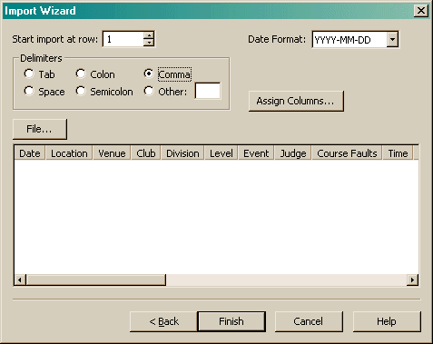

When importing data, there are a number items that must be configured.

The first item specifies the row of data to start the import with. This allows you to skip any existing headers. The preview at the bottom will show you how the data lines up.
The format of the date must be specified so the program can properly parse the date.
The delimiters section allows you to designate the character that separates the various fields in the input. If you specify the wrong character, it should be pretty obvious when you inspect the preview. Note, this section will be hidden when importing from Microsoft Excel or OpenOffice Calc.
The Assign Columns button allows you to specify the actual order of the fields in the data.
The File button allows you to select the file you wish to import. During the wizard process, you were presented a dialog asking for a file. If you entered a name there, that file will be shown here. If you elected not to enter a file at that time, you must select a file in order to see the preview.
When importing data, Agility Record Book will properly parse fields with quotes (") around them.